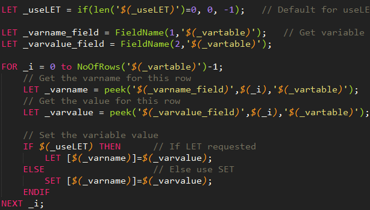
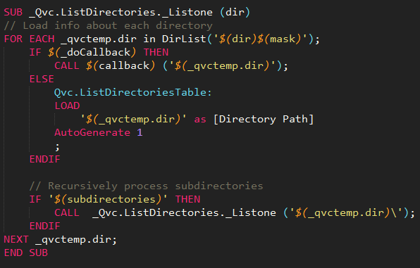
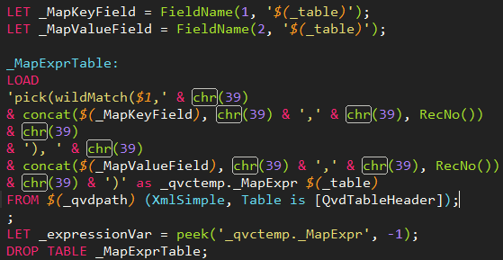

Some features:
- Highlighting for strings, numbers, comments, variables, keywords, built-in functions e.t.c
- Comment/uncomment code block with CTRL-/ key combination
- Ability to run load script from within Sublime Text 2
Highlighting
Both block comments (/* */) and line comments (//) are supported.
Variables, built-in functions and so on are trying properly show their boundaries by by coloring corresponding braces.
Nesting supported for all constucts - variable as parameter of function, function within function, function within variable and so on
Conflicts between some build-in functions and keywords (IF, LEFT, RIGHT, REPLACE) are resolving by context
Using command line parser to check syntax of script and reload QlikView document
In Sublime Text2 Build systems used to run external programs from within editor and and print captured output to the output panel. Plugin distribution includes command-line parser and runner for qlikview scripts. With it command `Run` will parse your script and output syntax error in ouput panel. Double clik on error message bring you to line and column where successfull parsing breaks. (You may switch from output panel to editor window pressing Ctrl-1) To reload your QlikView document after successful parsing first line of your script must point to QlikView document in question. For example
//#!c:\QlikDocs\CurrentProject\EtlApps\DataModelDebug.qvw
First 4 symbols of first line must be strictly
//#!(Shebang after line comment)
Installation
Download plugin from InQlik download page.
Extract zip file into Sublime Text 2 packages directory (You may locate packages directory by Sublime text 2 menu command: Preferences / Browse packages).
Plugin directory must be named Qlikview.
Download dart-sdk from Dartlang site and add add dart-sdk/bin directory in your PATH